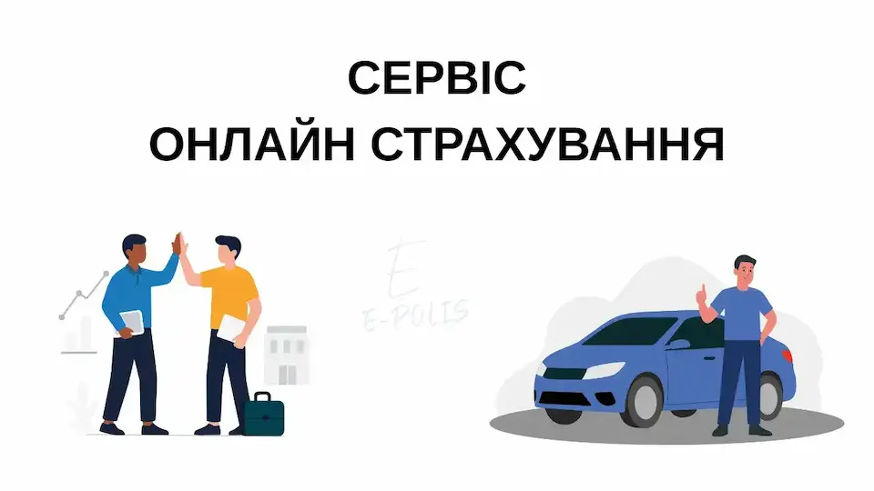

ДТП адвокат — безкоштовна юридична допомога для клієнтів E-polis
Отримайте професійну підтримку після ДТП, якщо поліc автоцивілки з додатковим покриттям оформлено через наш сервіс.
Що ми даруємо
Кожному клієнту, який оформив автоцивілку з додатковим покриттям на сайті E-Polis, ми надаємо послугу ДТП адвокат — безкоштовну консультацію та правовий супровід у разі ДТП.
Щоб скористатись послугою, надішліть нам у повідомленні:
- номерний знак автомобіля;
- місяць, коли був оформлений поліс.
Після цього наші адвокати зв'яжуться з вами та проконсультують щодо подальших дій.
Яку допомогу ви отримаєте (перелік послуг)

Оцінка матеріальних збитків
Проведемо експертну оцінку шкоди автомобіля після ДТП — підготуємо висновок для страхової або суду.
Юридичний супровід «під ключ»
Повний супровід справи: від збору документів до переговорів або представництва в суді.
Розрахунок вартості ремонту
Точний розрахунок вартості відновлювального ремонту та підготовка документів для відшкодування.
Автотехнічна експертиза
Визначення обставин ДТП та встановлення ступеня вини за допомогою технічних експертів.
Оцінка ринкової вартості
Професійна оцінка ринкової ціни автомобіля для страхових виплат або продажу.
Оцінка залишків при тотальному збитку
Оцінимо придатні залишки авто, якщо транспортний засіб зазнав тотальних ушкоджень.
Викуп пошкодженого авто
Можливість викупу автомобіля в пошкодженому стані — швидке рішення для складних випадків.
Переговори з винуватцем та претензії
Підготуємо досудову претензію та проведемо переговори з метою отримання відшкодування без суду.
Незалежна експертиза та робота зі страховою
Організуємо незалежну експертизу та повний контакт зі страховою компанією від імені клієнта.
Підбір СТО та контроль ремонту
Допоможемо обрати надійну СТО для якісного відновлення автомобіля та контролюватимемо процес.
Підготовка документів
Підготуємо і подамо усі необхідні документи — без прихованих платежів.
Як скористатися безкоштовною консультацією
- Оформіть автоцивілку з додатковим покриттям на E-Polis.
- У разі ДТП надішліть нам повідомлення з номерним знаком та місяцем оформлення поліса.
- Наші юристи проаналізують ситуацію та нададуть безкоштовну консультацію або повний супровід.
Увага: Безкоштовна послуга надається виключно клієнтам, які оформили автоцивілку з додатковим покриттям через наш сервіс. Інші випадки обговорюються індивідуально.
Чому обирають нашу послугу
- Швидка юридична допомога від практикуючих адвокатів ДТП.
- Прозорі умови — без прихованих платежів.
- Можливість вирішити конфлікт досудово, без судових витрат.
- Повний супровід по страхових виплатах та ремонту.